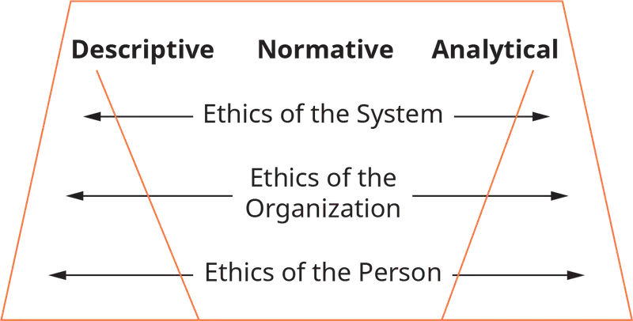
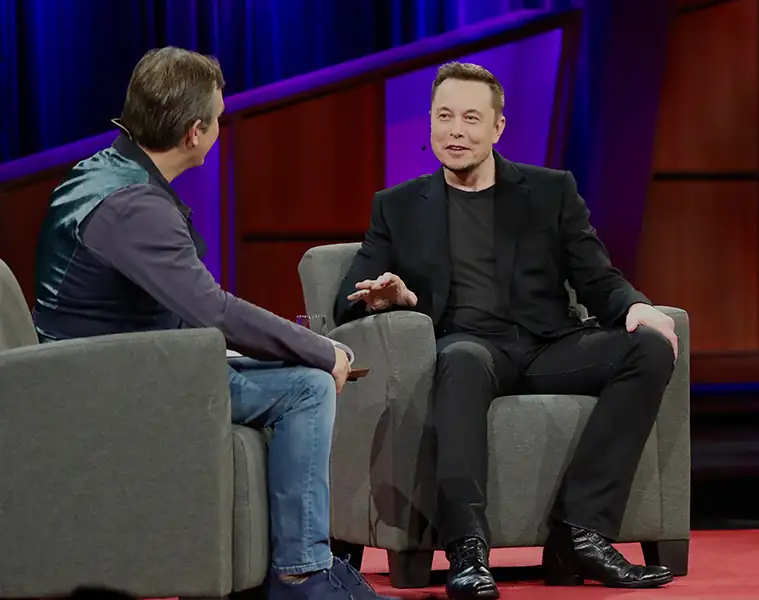
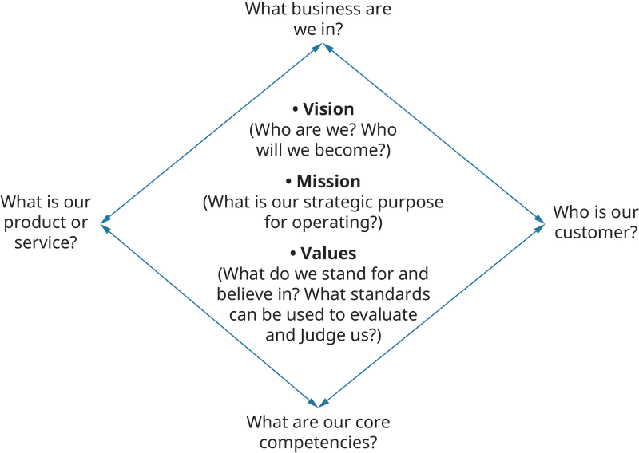
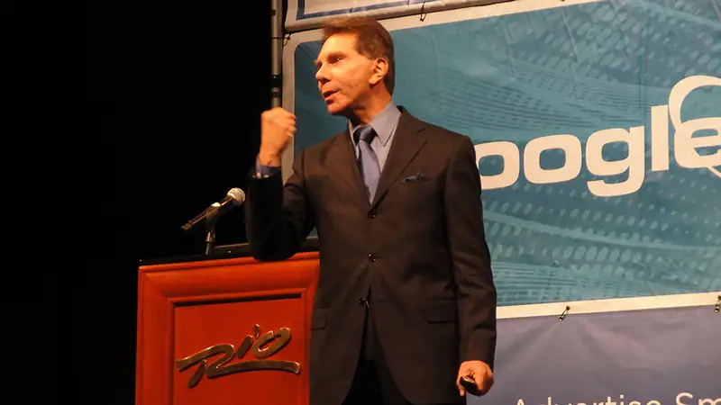
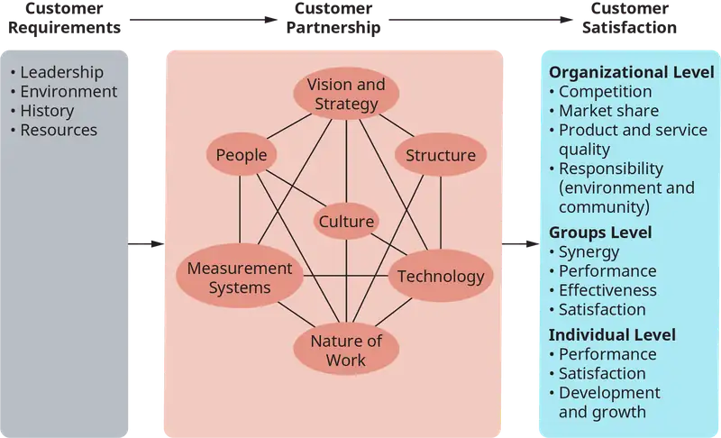
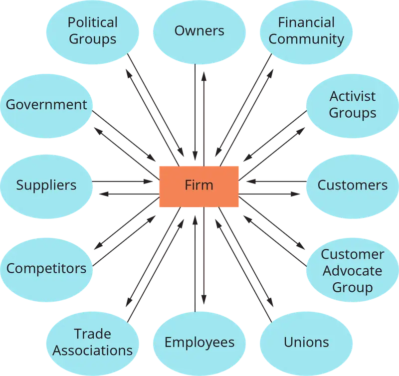
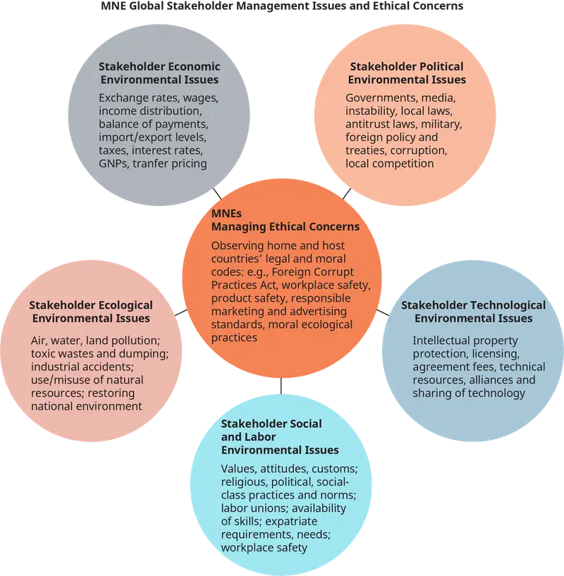

Chapter 5: Ethics, Corporate Responsibility, and Sustainability¶
Introduction¶
Learning Outcomes
After reading this chapter, you should be able to answer these questions:
- What are ethics and business ethics?
- What are the types of values that motivate ethics at the individual level?
- What are major ethical principles that can guide individuals and organizations?
- Why is ethical leadership important in organizations?
- What are differences between values-based ethics and compliance in organizations?
- What purpose can CSR (corporate social responsibility) offer to organizations and society?
- What ethical issues do organizations and individuals encounter in the global environment?
- What future near-term forecasts will affect ethical and corporate conduct of organizations?
Exploring Managerial Careers: Playing with a Purpose at Hasbro
Hasbro is a global play and entertainment company that takes corporate social responsibility (CSR) very seriously. Founded nearly a century ago in Rhode Island, Hasbro integrates its CSR efforts throughout the organization with the goal of helping to make the world a better place for children of all ages.
In 2017, the company achieved the number one spot in the “100 Best Corporate Citizens” rankings, published annually by Corporate Responsibility magazine. Hasbro is no stranger to this achievement; over the past five years Hasbro has consistently been in the top five spots on this prestigious list—and that is no accident.
With more than 5,000 employees, Hasbro relies heavily on its strategic brand blueprint to guide its efforts in CSR, innovation, philanthropy, and product development. With a business portfolio that includes such well-known brands as Nerf, Play-Doh, Transformers, Monopoly, and The Game of Life, the company focuses its CSR efforts on four key areas: product safety, environmental sustainability, human rights and ethical sourcing, and community.
According to the company, product safety is its highest priority. Hasbro uses a five-step quality assurance process that starts with design and then moves to engineering, manufacturing, and packaging. Another key part of product safety at Hasbro is incorporating continuous feedback from both consumers and retailers and insisting that these high standards and quality processes apply to all third-party factories worldwide that manufacture its products.
Hasbro is also committed to finding new ways to reduce its environmental footprint. Over the past several years, the company has reduced energy consumption, cut greenhouse gas emissions, and reduced water consumption and waste production in its production facilities. In addition, Hasbro has totally eliminated the use of wire ties in all of its product packaging, saving more than 34,000 miles of wire tires—more than enough to wrap around the earth’s circumference.
Human rights and ethical sourcing remain a key ingredient of Hasbro’s CSR success. Treating people fairly is a core company value, as well as working diligently to make great strides in diversity and inclusion at all levels of the organization. Company personnel work closely with third-party factories to ensure that the human rights of all workers in the Hasbro global supply chain are recognized and upheld.
Philanthropy, corporate giving, and employee volunteering are key components of the Hasbro community. Through its various charitable programs, Hasbro made close to $15 million in financial contributions and product donations in 2016, which reached close to an estimated 4 million children around the globe. Several years ago, the company started an annual Global Day of Joy as a way of engaging its employees worldwide in community service. In a recent year, more than 93 percent of Hasbro’s employees participated in service projects in more than 40 countries.
Hasbro is in the business of storytelling, and its CSR efforts tell the story of an ethical, responsible organization whose mission is to “create the world’s best play experiences.” Its ability to be accountable for its actions and to help make the world a better place one experience at time continues to make it a highly successful company.
Sources: Brian Goldner, “Who Are You Really?—Brian Goldner, President & CEO for Hasbro, Inc.,” http://insights.ethisphere.com, accessed June 29, 2017; “CSR Fact Sheet,” https://csr.hasbro.com, accessed June 23, 2017; “The World’s Biggest Public Companies: Hasbro,” Forbes, https://www.forbes.com, accessed June 23, 2017; “2016 Global Philanthropy & Social Impact,” https://csr.hasbro.com, accessed June 23, 2017; Elizabeth Gurdus, “Hasbro CEO Reveals the Magic Behind the Toymaker’s Earnings Beat,” CNBC, http://www.cnbc.com, April 24, 2017; Jade Burke, “Hasbro Reaches Top spot in CSR Listing,” Toy News, http://www.toynews-online.biz, April 21, 2017; Kathrin Belliveau, “CSR at Hasbro: What It Means to Play with Purpose,” LinkedIn, https://www.linkedin.com, April 20, 2017.
This chapter will examine the role of ethics and how it affects organizations. Ethics is examined at the individual level, the organizational level, and also examines the role of ethics and leadership. Corporate social responsibility and how it is different than compliance will also be examined. Finally, ethics around the globe and in different cultures and the emerging issues regarding corporate social responsibility and ethics will be discussed.
5.1 Ethics and Business Ethics Defined¶
- What are ethics and business ethics?
Ethics essentially involves how we act, live, lead our lives, and treat others. Our choices and decision-making processes and our moral principles and values that govern our behaviors regarding what is right and wrong are also part of ethics.
Normative ethics refers to the field of ethics concerned with our asking how should and ought we live and act? Business ethics is applied ethics that focuses on real-world situations and the context and environment in which transactions occur—How should we apply our values to the way we conduct business?
Ethics and business ethics continue to gain influence in corporations, universities, and colleges nationally and internationally. No longer considered a luxury but a necessity, business ethics has awakened a need in the public consciousness due to crises in many areas. For example, the 2008 subprime lending crisis—economic effects of which still persist—revealed widespread corruption of large investment banks and lending institutions internationally. Unsupported mortgages were fraudulently offered with no legitimate financial backing. Some large financial institutions, such as Lehman Brothers Holdings, Inc., went bankrupt; millions of mortgage holders lost their homes. An estimated cost of that crisis to the global economy is over $22 trillion U.S. dollars.
In the early 2000s, CEOs and top-level leaders from notable corporations such as Enron, Tyco, WorldCom, and others were caught committing outrageously greedy and fraudulent crimes of white-collar theft from their organizations and shareholders. The now classic film The Smartest Guys in the Room depict how Enron’s leaders during that time, Kenneth Lay (now deceased), Jeff Skilling (still serving prison time), and Andrew Fastow (released from prison in 2011), deceived employees, Wall Street, and shareholders. Enron’s crisis took an estimated $67 billion of shareholder wealth out of the U.S. economy. These criminal activities ushered in national laws such as the Sarbanes-Oxley Act, which we discuss below.
While these recent historical crises illustrate the continuing relevance and importance of business ethics, ethical issues are not only concerned with financial and economically motivated crimes and misbehaviors. Fast forward to the rise of artificial intelligence (AI), which also is calling attention to the relevance and need for ethics in scientific institutions, businesses, and governments. The public needs to be informed of potential and actual harmful consequences—as well as all the recognizable benefits—of these technologies that are in large part driven by algorithms (“a sequence of instructions telling a computer what to do”). Intentional and unintentional misuses of such designs embedded in artificially intelligent technologies can negatively and harmfully affect individual lives as well as entire societies. For example, studies show that a number of minority members of society are often discriminated against by institutions using faulty algorithms to qualify customers for mortgages and to predict who is at risk of being incarcerated. Often times, racial and low-income minorities are discriminated against by such technology designs.
At a societal level, another now classic film, The Minority Report, illustrates how misuses of technology can threaten individual rights, privacy, free will, and choice. While this may sound like science fiction, scientific and business luminaries such as Elon Musk, Stephen Hawking, Bill Gates, and others have openly declared that we as a society must be cautious and ethically aware and active to fend off the ill effects of the control and dominant influences of certain AI algorithms in our lives. Scientific and ethical practices in corporate social responsibility (CSR) are one way that ethicists, business leaders, and consumers can support moral self-regulation of technologies. Some scientific and technological firms have adopted ethics boards to help safeguard against harmful social uses of AI technologies. The European Union (EU) has produced policy studies that are forerunners of laws to safeguard against potentially harmful uses of robotics.
Another timely ethical issue is climate change and the environment. Lack of sustainable environmental practices that curb air pollution and destructive uses of land, water, and natural resources have, according to a large community of reputable scientists, threatened Earth’s—and our neighborhoods’—atmosphere. Scientific studies and United Nations reports affirm that changes to the earth’s atmosphere, melting glaciers, and rising seas are occurring at accelerated rates. For example, “California's coastline could rise up to 10 feet by 2100, about 30 to 40 times faster than sea-level rise experienced over the last century.” While university, business, and local community groups are rallying for legal actions to curtail and reverse environmental polluters, current political executive orders push against such regulations designed to protect against further erosion of the physical environment. The point here is that as these issues described above are not only technological, economic, and political in nature, but also moral and ethical, as the public’s health, welfare, and safety are at risk.
Relevant ethical questions can be asked to prevent a crisis: Who is responsible for preventing and addressing what happens to individuals, the public, our institutions, and government and who is responsible for preventing such crises and harmful effects from occurring and reoccurring? At whose and what costs? Whose responsibility is it to protect and preserve the common good of societies? What ethical and moral principles should and can motivate individuals, groups, and society members to act to change course?
Universities and colleges are taking notice. Business ethics and corporate social responsibility courses and offerings are becoming increasingly important. The accrediting national body of business schools, AACSB (Association to Advance Collegiate Schools of Business), reported that “[i]n their curricula, research, and outreach, business schools must be advocates for the human dimension of business, with attention to ethics, diversity, and personal well-being.” In addition, NGOs (nongovernmental organizations), emergent groups internationally representing the public’s interests and common good, and political action movements are beginning again to give voice to injustices and potentially dangerous ethical as well as fiscal (income inequality), health (the environment), and discriminatory (racism and stereotyping large segments of the society) problems that require stakeholder as well as stockholder actions.
In this chapter, we begin by presenting an overview of the dimensions of business ethics at the individual, professional, and leadership levels, followed by the organizational, societal, and global levels.
Concept Check
What individual and organizational ethical issues can we expect to occur?
What are some signs of unethical activities you might notice individually and organizationally?
5.2 Dimensions of Ethics: The Individual Level¶
- What types of values affect business ethics at the individual level?
Ethics is personal and unique to each individual. Ethical decision-making also involves other individuals, groups, organizations, and even nations—stakeholders and stockholders—as we later explain. Kenneth Goodpaster and Laura Nash characterized at least three dimensions or levels of ethics that help explain how individual and group values, norms, and behaviors of different stakeholders interact and respond with the aim of bringing orderly, fair, and just relationships with one another in transactions. This approach is illustrated in Figure 5.2.

Ethical principles generally are codified into laws and regulations when there is societal consensus about such wrongdoing, such as laws against drunk driving, robbery, and murder. These laws, and sometimes unwritten societal norms and values, shape the local environment within which individuals act and conduct business. At the individual level, a person’s values and beliefs are influenced by family, community, peers and friends, local and national culture, society, religious—or other types of—communities, and geographic environment. It is important to look at individual values and ethical principles since these influence an individual’s decisions and actions, whether it be decisions to act or the failure to act against wrongdoing by others. In organizations, an individual’s ethical stance may be affected by peers, subordinates, and supervisors, as well as by the organizational culture. Organizational culture often has a profound influence on individual choices and can support and encourage ethical actions or promote unethical and socially irresponsible behavior.
Ethics and Values: Terminal and Instrumental Values¶
Of the values that make up an organization’s culture, and an individual’s motivations, ethical values are now considered among the most important. For instance, when Google took its company public in 2004, its prospectus included an unusual corporate goal: “Don’t be evil.” That can be a challenge when you’re a multibillion-dollar corporation operating around the world, with investors expecting you to produce a profit. Google’s operations in the United States and overseas have generated controversy and debate as to how well it’s living up to its stated goal. There is a continuing need to integrate ethical values in corporations. The Ethics & Compliance Initiative found 22 percent of global workers reported pressure to compromise their standards. Top corporate managers are under scrutiny from the public as never before, and even small companies are finding a need to put more emphasis on ethics to restore trust among their customers and the community.

Values can be powerful and motivating guides for individual, group, and organizational behavior. At the individual level, however, a reoccurring issue individuals seem to have with acting ethically is that many people do not consciously know or choose their values. We often act first and think or rationalize later. Secondly and relatedly, the methods and ways we act to reach our goals and objectives are also not always deliberately chosen. Consequently, many times we let the “ends justify the means” and/or “the means justify the ends” in our decisions and actions. Ethical dilemmas (i.e., situations and predicaments in which there is not an optimal or desired choice to be made between two options, neither of which solves an issue or delivers an opportunity that is ethical) often originate and occur from an unawareness of how to sort out and think through potential consequences of our actions or inaction. Becoming aware and conscious of our values is a first step toward being able to act ethically and responsibly in order to prevent or lessen harm to ourselves or others.
Toward this end, it is helpful to understand values that have been categorized as terminal and instrumental. Terminal values are desired goals, objectives, or end states that individuals wish to pursue. Instrumental values are preferred means of behavior used to obtain those goals. Examples of terminal values—at a higher level—are freedom, security, pleasure, social recognition, friendship, accomplishment, comfort, adventure, equality, wisdom, and happiness. Examples of instrumental values are being helpful, honest, courageous, independent, polite, responsible, capable, ambitious, loving, self-contained, and forgiving.
Identifying and separating terminal from instrumental values in any given situation can assist individuals, groups, and work units in distinguishing between the “ends (goals) from the means (methods to reach the goals)” and vice versa in making decisions, thereby helping us choose more ethical options—or at least less unethical ones—in situations. For example, a sales manager has a goal of motivating his sales force to achieve individual sales performance levels at a 17% increase over current levels by the end of the calendar quarter. The means of doing so, according to the manager, are, “Go for it. Use your imagination and fortitude. Just make sure each of you reaches or exceeds that goal.” In this case, the terminal value is high achievement to the point of being overly ambitious in order to reach an aggressive financial goal. The instrumental value can also be described as aggressive achievement. Both the terminal and instrumental values in this scenario could very likely create undue pressure and even anxiety for some members of the sales force. The ethical logic underlying this example is to let the “end justify the means.” The scenario also raises the question of whether or not individuals in the sales force would choose the values underlying the instruction of the manager if each member identified and reflected on those values.
If the end (terminal) value creates undue pressures and is unrealistic and unobtainable, then the means (instrumental) value would likely create tension and unethical behavior as well. This example in some ways mirrors what actually recently happened at Wells Fargo & Company—an American international banking and financial services holding company headquartered in San Francisco. High pressure and unrealistic sales goals were adopted and implemented from the top down in that organization. A result was that members of that sales force lied, pressured, and misled loyal customers to buy bogus financial products to meet unrealistic sales goals. Such actions when discovered led to and revealed illegal and unethical actions from not only the sales professionals but officers at the top of that organization. Ultimately, the CEO was pressured to resign, 5,300 employees were fired, and several lawsuits ensued.
There are many lessons to take from the Wells Fargo fiasco. From an individual ethical perspective, one insight is to be aware of the underlying values of organizational and other job- and task-related directives issued. Another is to discover your own values and ethical principles that can guide you in work, study, and personal situations so that someone else’s problems may not have to become yours. A helpful assessment for discovering your values is the PVA (Personal Values Assessment) found at https://www.valuescentre.com/our-products/products-individuals/personal-values-assessment-pva.
Caroucci found that “five ways organizations needlessly provoke good people to make unethical choices” are the following. (1) People feel psychologically unsafe to speak up. (2) Excessive pressure to reach unrealistic performance targets compromises people’s choices. (3) When individuals face conflicting goals, they feel a sense of unfairness and compromise their reasoning. (4) Only talking about ethics when there is a scandal. (5)When there is no positive example available, individuals react instead of choose ethical decisions. Familiarizing yourself with ethical principles in the following section is another way of helping you think through complicated situations to make conscious, values-based decisions to do “the right thing.”
Concept Check
What are terminal and instrumental values?
What are ways organizations can employ values to induce people to make ethical choices?
5.3 Ethical Principles and Responsible Decision-Making¶
- What are major ethical principles that can be used by individuals and organizations?
Before turning to organizational and systems levels of ethics, we discuss classical ethical principles that are very relevant now and on which decisions can be and are made by individuals, organizations, and other stakeholders who choose principled, responsible ways of acting toward others.
Ethical principles are different from values in that the former are considered as rules that are more permanent, universal, and unchanging, whereas values are subjective, even personal, and can change with time. Principles help inform and influence values. Some of the principles presented here date back to Plato, Socrates, and even earlier to ancient religious groups. These principles can be, and are, used in combination; different principles are also used in different situations. The principles that we will cover are utilitarianism, universalism, rights/legal, justice, virtue, common good, and ethical relativism approaches. As you read these, ask yourself which principles characterize and underlie your own values, beliefs, behaviors, and actions. It is helpful to ask and if not clear, perhaps identify the principles, you most often use now and those you aspire to use more, and why. Using one or more of these principles and ethical approaches intentionally can also help you examine choices and options before making a decision or solving an ethical dilemma. Becoming familiar with these principles, then, can help inform your moral decision process and help you observe the principles that a team, workgroup, or organization that you now participate in or will be joining may be using. Using creativity is also important when examining difficult moral decisions when sometimes it may seem that there are two “right” ways to act in a situation or perhaps no way seems morally right, which may also signal that not taking an action at that time may be needed, unless taking no action produces worse results.
Utilitarianism: A Consequentialist, “Ends Justifies Means” Approach¶
The utilitarianism principle basically holds that an action is morally right if it produces the greatest good for the greatest number of people. An action is morally right if the net benefits over costs are greatest for all affected compared with the net benefits of all other possible choices. This, as with all these principles and approaches, is broad in nature and seemingly rather abstract. At the same time, each one has a logic. When we present the specifics and facts of a situation, this and the other principles begin to make sense, although judgement is still required.
Some limitations of this principle suggest that it does not consider individuals, and there is no agreement on the definition of “good for all concerned.” In addition, it is difficult to measure “costs and benefits.” This is one of the most widely used principles by corporations, institutions, nations, and individuals, given the limitations that accompany it. Use of this principle generally applies when resources are scarce, there is a conflict in priorities, and no clear choice meets everyone’s needs—that is, a zero-sum decision is imminent
Universalism: A Duty-Based Approach¶
Universalism is a principle that considers the welfare and risks of all parties when considering policy decisions and outcomes. Also needs of individuals involved in a decision are identified as well as the choices they have and the information they need to protect their welfare. This principle involves taking human beings, their needs, and their values seriously. It is not only a method to make a decision; it is a way of incorporating a humane consideration of and for individuals and groups when deciding a course of action. As some have asked, “What is a human life worth?”
Cooper, Santora, and Sarros wrote, “Universalism is the outward expression of leadership character and is made manifest by respectfulness for others, fairness, cooperativeness, compassion, spiritual respect, and humility.” Corporate leaders in the “World’s Most Ethical Companies” strive to set a “tone at the top” to exemplify and embody universal principles in their business practices. Howard Schultz, founder of Starbucks; cofounder Jim Sinegal at Costco; Sheryl Sandberg, chief operating officer of Facebook; and Ursula M. Burns, previous chairperson and CEO of Xerox have demonstrated setting effective ethical tones at the top of organizations.
Limitations here also show that using this principle may not always prove realistic or practical in all situations. In addition, using this principle can require sacrifice of human life—that is, giving one’s life to help or save others—which may seem contrary to the principle. The film The Post, based on fact, portrays how the daughter of the founder of the famed newspaper, the Washington Post, inherited the role of CEO and was forced to make a decision between publishing a whistle-blowers’ classified government documents of then top-level generals and officials or keep silent and protect the newspaper. The classified documents contained information proving that generals and other top-level government administrators were lying to the public about the actual status of the United States in the Vietnam War. Those documents revealed that there were doubts the war could be won while thousands of young Americans continued to die fighting. The dilemma for the Washington Post’s then CEO centered on her having to choose between exposing the truth based on freedom of speech—which was the mission and foundation of the newspaper—or staying silent and suppressing the classified information. She chose, with the support of and pressure from her editorial staff, to release the classified documents to the public. The Supreme Court upheld her and her staff’s decision. A result was enflamed widespread public protests from American youth and others. President Johnson was pressured to resign, Secretary of State McNamara later apologized, and the war eventually ended with U.S. troops withdrawing. So, universalist ethical principles may present difficulties when used in complex situations, but such principles can also save lives, protect the integrity of a nation, and stop meaningless destruction.
Rights: A Moral and Legal Entitlement–Based Approach¶
This principle is grounded in both legal and moral rights. Legal rights are entitlements that are limited to a particular legal system and jurisdiction. In the United States, the Constitution and Declaration of Independence are the basis for citizens’ legal rights, for example, the right to life, liberty, and the pursuit of happiness and the right to freedom of speech. Moral (and human) rights, on the other hand, are universal and based on norms in every society, for example, the right not to be enslaved and the right to work.
To get a sense of individual rights in the workplace, log on to one of the “Best Companies to Work For” annual lists (http://fortune.com/best-companies/). Profiles of leaders and organizations’ policies, practices, perks, diversity, compensation, and other statistics regarding employee welfare and benefits can be reviewed. The “World’s Most Ethical Companies” also provides examples of workforce and workplace legal and moral rights. This principle, as with universalism, can always be used when individuals, groups, and nations are involved in decisions that may violate or harm such rights as life, liberty, the pursuit of happiness, and free speech.
Some limitations when using this principle are (1) it can be used to disguise and manipulate selfish and unjust political interests, (2) it is difficult to determine who deserves what when both parties are “right,” and (3) individuals can exaggerate certain entitlements at the expense of others. Still, the U.S. Constitution’s Bill of Rights, ratified in 1791, was designed as and remains the foundation of, which is based on freedom and justice to protect the basic rights of all.
Justice: Procedures, Compensation, and Retribution¶
This principle has at least four major components that are based on the tenets that (1) all individuals should be treated equally; (2) justice is served when all persons have equal opportunities and advantages (through their positions and offices) to society’s opportunities and burdens; (3) fair decision practices, procedures, and agreements among parties should be practiced; and (4) punishment is served to someone who has inflicted harm on another, and compensation is given to those for a past harm or injustice committed against them.
A simple way of summarizing this principle when examining a moral dilemma is to ask of a proposed action or decision: (1) Is it fair? (2) Is it right? (3) Who gets hurt? (4) Who has to pay for the consequences? (5) Do I/we want to assume responsibility for the consequences? It is interesting to reflect on how many corporate disasters and crises might have been prevented had the leaders and those involved taken such questions seriously before proceeding with decisions. For example, the following precautionary actions might have prevented the disaster: updating the equipment and machinery that failed in the BP and the Exxon Valdez oil crises and investment banks and lending institutions following rules not to sell subprime mortgages that could not and would not be paid, actions that led to the near collapse of the global economy.
Limitations when using this principle involve the question of who decides who is right and wrong and who has been harmed in complex situations. This is especially the case when facts are not available and there is no objective external jurisdiction of the state or federal government. In addition, we are sometimes faced with the question, “Who has the moral authority to punish to pay compensation to whom?” Still, as with the other principles discussed here, justice stands as a necessary and invaluable building block of democracies and freedom.
Virtue Ethics: Character-Based Virtues¶
Virtue ethics is based on character traits such as being truthful, practical wisdom, happiness, flourishing, and well-being. It focuses on the type of person we ought to be, not on specific actions that should be taken. Grounded in good character, motives, and core values, the principle is best exemplified by those whose examples show the virtues to be emulated.
Basically, the possessor of good character is moral, acts morally, feels good, is happy, and flourishes. Altruism is also part of character-based virtue ethics. Practical wisdom, however, is often required to be virtuous.
This principle is related to universalism. Many leaders’ character and actions serve as examples of how character-based virtues work. For example, the famous Warren Buffett stands as an icon of good character who demonstrates trustworthy values and practical wisdom. Applying this principle is related to a “quick test” before acting or making a decision by asking, “What would my ‘best self’ do in this situation?” Others ask the question inserting someone they know or honor highly.
There are some limitations to this ethic. First, some individuals may disagree about who is virtuous in different situations and therefore would refuse to use that person’s character as a principle. Also, the issue arises, “Who defines virtuous, especially when a complex act or incident is involved that requires factual information and objective criteria to resolve?”
The Common Good¶
The common good is defined as “the sum of those conditions of social life which allow social groups and their individual members relatively thorough and ready access to their own fulfillment.” Decision makers must take into consideration the intent as well as the effects of their actions and decisions on the broader society and the common good of the many.
Identifying and basing decisions on the common good requires us to make goals and take actions that take others, beyond ourselves and our self-interest, into account. Applying the common good principle can also be asked by a simple question: “How will this decision or action affect the broader physical, cultural, and social environment in which I, my family, my friends, and others have to live, breathe, and thrive in now, next week, and beyond?”
A major limitation when using this principle is, “Who determines what the common good is in situations where two or more parties differ over whose interests are violated?” In individualistic and capitalist societies, it is difficult in many cases for individuals to give up their interests and tangible goods for what may not benefit them or may even deprive them.
Ethical Relativism: A Self-Interest Approach¶
Ethical relativism is really not a “principle” to be followed or modeled. It is an orientation that many use quite frequently. Ethical relativism holds that people set their own moral standards for judging their actions. Only the individual’s self-interest and values are relevant for judging his or her behavior. Moreover, moral standards, according to this principle, vary from one culture to another. “When in Rome, do as the Romans do.”
Obvious limitations of relativism include following one’s blind spots or self-interests that can interfere with facts and reality. Followers of this principle can become absolutists and “true believers”—many times believing and following their own ideology and beliefs. Countries and cultures that follow this orientation can result in dictatorships and absolutist regimes that practice different forms of slavery and abuse to large numbers of people. For example, South Africa’s all-white National Party and government after 1948 implemented and enforced a policy of apartheid that consisted of racial segregation. That policy lasted until the 1990s, when several parties negotiated its demise—with the help of Nelson Mandela (www.history.com/topics/apartheid). Until that time, international firms doing business in South Africa were expected to abide by the apartheid policy and its underlying values. Many companies in the United States, Europe, and elsewhere were pressured in the 1980s and before by public interest groups whether or not to continue doing business or leave South Africa.
At the individual level, then, principles and values offer a source of stability and self-control while also affecting job satisfaction and performance. At the organizational level, principled and values-based leadership influences cultures that inspire and motivate ethical behavior and performance. The following section discusses how ethical leadership at the top and throughout organizations affects ethical actions and behaviors.
Concept Check
What are some ethical guidelines individuals and organizations can use to make ethical choices?
Can being aware of the actual values you use to guide your actions make a difference in your choices?
5.4 Leadership: Ethics at the Organizational Level¶
- Why is ethical leadership important in organizations?
Organizational leadership is an important first step toward identifying and enacting purpose and ethical values that are central to internal alignment, external market effectiveness, and responsibility toward stakeholders. The scholar Chester Barnard defined a values-based leadership approach in 1939 as one that inspires “cooperative personal decisions by creating faith in common understanding, faith in the probability of success, faith in the ultimate satisfaction of personal motives, and faith in the integrity of common purpose.” Figure 5.4 illustrates how vision, mission, and values are foundational in guiding the identification and implementation of the strategic and operational questions and alignment of an organization—which is a major part of leadership.

Leadership is defined as the ability to influence followers to achieve common goals through shared purposes. Organizational leaders are responsible to a wide range of stakeholders and stockholders as well as employees toward meeting the goals for the organization. How responsibly and ethically they choose to do so depends on a number of factors. From an ethical and related effectiveness perspective, the leader’s values count since these generally become the values of an organization. A leader’s influence is referred to as “the tone at the top.” While a leader’s values should align to those of the organization, its vision and mission, this is not always the case, as we know from the crises discussed earlier when referring to the classical failures at Enron, Tyco, WorldCom, Wells Fargo, and other notable companies.
Since leadership is a most important element in forming and directing an organization’s strategy, culture, and governance system, it is often a shared responsibility among other officers and followers that cascades throughout the organization. As an example, the widely acknowledged Ethisphere, a private firm that evaluates firms’ ethical behavior and responsibilities, uses five criteria that produce a single Ethics Quotient (EQ) score. The first is a company’s ethics and compliance program, which accounts for 35% of the EQ. The second criterion is whether or not and the extent to which ethics is embedded into a company’s culture. The third element is corporate citizenship and responsibility, elements that measure companies’ environmental impact. The fourth component is corporate governance—whether a firm’s CEO and board chair are held by one or separate people. An increased focus recently emphasized diversity in board and leadership positions. The fifth criterion is leadership, innovation, and reputation.
There were, according to Ephisphere, 124 honorees in 2017, spanning 5 continents, 19 countries, and 52 industry sectors. Among the 2017 list are 13 eleven-time honorees and 8 first-time honorees. Honorees include “companies who recognize their role in society to influence and drive positive change in the business community and societies around the world. These companies also consider the impact of their actions on their employees, investors, customers and other key stakeholders and leverage values and a culture of integrity as the underpinnings to the decisions they make each day.” Table 5.1 includes 10 of the 124 most ethical companies in 2017 as measured by Ethispher's criteria.
Table 5.1
| World’s Most Ethical Companies Honorees | ||
|---|---|---|
| Company | Industry | Country |
| 3M Company | Industrial Manufacturing | USA |
| Accenture | Consulting Services | IRELAND |
| Aflac Incorporated | Accident & Life Insurance | USA |
| Allstate Insurance Company | Property & Casualty Insurance | USA |
| Alyeska Pipeline Service Co. | Oil & Gas, Renewables | USA |
| Applied Materials, Inc. | Electronics & Semiconductors | USA |
| Arthur J. Gallagher & Co. | Insurance Brokers | USA |
| Avnet, Inc. | Electronics & Semiconductors | USA |
| Baptist Health South Florida | Healthcare Providers | USA |
| Source: Adapted from Ephisphere, 2017, https://www.worldsmostethicalcompanies.com/honorees/ | ||
For ethical leaders, authenticity and integrity, in addition to their values, are also important components of character and behavior that must also be translated into attitude and action toward followers, external stakeholders, and broader communities. Leaders have a responsibility to show respect toward others, treat all stakeholders fairly, work toward a common good, build community, and be honest. These virtue-related values, also referred to as character-related, as discussed earlier, help create an ethical corporation and environment:
Show Respect for Others¶
Respecting others requires leaders to recognize the intrinsic worth of others and forces them to treat people as ends in themselves—never as means to an end. In other words, people should be seen as valuable because of who they are (a universal principle), not only because of what they can do for others or how they can help others advance. Showing respect for others includes tolerating individual differences and affording followers the freedom to think independently, act as individuals, and pursue their own goals. When a leader shows respect for followers by providing them autonomy, subordinates can feel more useful, valued, and confident. Such a situation often leads to greater loyalty and productivity among subordinates.
Treat All Stakeholders Fairly¶
Ethical leaders strive to treat everyone their decisions may affect in a fair and just manner. Equality is also a top priority for ethical leaders and needs to factor prominently into their decision-making. Ethical leaders must refrain from offering special treatment to others; failure to do so creates winners and losers—in-groups and out-groups—and can breed resentment between those who receive special treatment and those who do not. The only exception occurs when an individual’s specific situation warrants special treatment in order for a just outcome to be realized.
Preventing winners and losers from emerging is not always easy. Some situations require the distribution of benefits and burdens, and such situations can test a leader’s ability to ensure that justice is achieved. Beauchamp and Bowie defined the common principles that guide leaders facing such dilemmas; their findings can help leaders allocate responsibilities fairly and justly. These principles stipulate that every person must receive an equal share of opportunity according to his needs, rights, effort, societal contributions, and performance.
Work Toward a Common Good¶
Mahatma Gandhi offers an example of what striving toward a common good entails. Known for his commitment to nonviolent protests and mass civil disobedience, the Indian activist and ideological leader spent 20 years in South Africa opposing legislation that discriminated against Indians. He spent the remainder of his life in India fighting for independence from foreign rule and working to reduce poverty and taxation, liberate women, and end multiple forms of discrimination. He championed such causes not because he would personally benefit, but because a larger, more substantial population would. Gandhi devoted his life to furthering social causes he believed in and developed a personal sense of purpose and meaning that later translated into a societal and then global ethic.
Ethical leaders strive to further social or institutional goals that are greater than the goals of the individual. This responsibility requires the ethical leader to serve a greater good by attending to the needs of others. This type of behavior is an example of altruism: a steadfast devotion to improving the welfare of others. Altruistic behavior may manifest in a corporate setting through actions such as mentoring, empowerment behaviors (encouraging and enabling others), team building, and citizenship behaviors (such as showing concern for others’ welfare), to name a few.
Build Community¶
Whole Foods Market, recently purchased by Amazon, is well known for its community outreach programs on both local and global scales. Every Whole Foods store donates to community food banks and shelters and throughout the year holds “5% days,” when 5% of the day’s net sales are donated to local nonprofit or educational organizations. Globally, the company established the Whole Planet Foundation to combat world hunger and supports programs addressing issues such as animal welfare, nutrition, and environmentally friendly production methods.
The effort of Whole Foods to strengthen its stores’ local and global neighborhoods is a perfect example of leaders building community. When an ethical leader focuses on the needs of others rather than the self, other people will often follow suit. This can lead to a strong contingent of followers working with the leader to achieve a common goal that is compatible with the desires of all stakeholders. Furthering a common goal means that no one can place his needs ahead of the group’s goals and an ethical leader cannot impose his will on others. A successful CEO who works with many charities or other individuals to feed the homeless exemplifies a leader building community.
Be Honest¶
Honesty is considered desirable by practically everyone, but it is sometimes unclear what honesty actually demands of us. Being honest is not simply telling the truth and avoiding deceitful behaviors; it requires leaders to be as open as possible and to describe reality fully, accurately, and in sufficient detail. Telling the complete truth is not always the most desirable action, however. Leaders must be sensitive to the feelings and beliefs of others and must recognize that the appropriate level of openness and candor varies depending on the situation.
According to a recent survey, 58% of people internationally trust companies, but 42% are less sure. Being more transparent with customers, stakeholders, and stockholders should become a priority for leaders and boards of companies. Dishonesty can be a disastrous practice for a leader. Dishonest leaders distort reality, which can lead to unfavorable outcomes for all stakeholders. Researchers Cialdini, Petia, Petrova, and Goldstein found that dishonest organizations suffer from tarnished reputations, decreased worker productivity, and various damages related to increased surveillance. They concluded that the costs of organizational dishonesty greatly outweigh any short-term gains from such behavior.

Stewardship and Servant Leadership Styles¶
Effective leaders, and followers, who lead by example and demonstrate virtuous practices while demonstrating successful practices are more numerous than the media or press reveal. Such examples are also entrepreneurs who practice both stewardship and servant leadership. Their names are not always recognizable nationally, but their companies, communities, and stakeholders know them well. For example, Inc.com’s recent 2017 list of top 10 leaders features four women CEOs who go beyond the “call of duty” to serve others while succeeding in business. For example, Brittany Merrill Underwood started and is CEO of Akola Jewelry and was named in Yahoo’s “Best Person in the World” series in 2014. Her company “reinvests 100 percent of their profits to support work opportunities, training, social programs, and the construction of training centers and water wells in impoverished communities throughout the globe.”
A classic example of these leadership styles is also represented by Aaron Feuerstein, a previous CEO of a manufacturing plant in Massachusetts, whose example continues to represent both a steward and servant leadership style.
Managerial Leadership: Servant Leadership Personified: Aaron Feuerstein at Malden Mills
Aaron Feuerstein, a third-generation owner of Malden Mills in Lawrence, Massachusetts, suffered his factory burning to the ground on December 11, 1995. Feuerstein had the option of using the insurance money to rebuild the plant, but he instead paid the salaries and complete benefits of all the 3,000 workers for 6 months while the factory was rebuilt. He later said that he had no other option than to help the employees. His action was based on his study of the Talmud, and he presented at Xavier University:
“I have the responsibility to the worker, both blue-collar and white-collar. I have an equal responsibility to the community. It would have been unconscionable to put 3,000 people on the streets and deliver a deathblow to the cities of Lawrence and Methuen. Maybe on paper our company is worthless to Wall Street, but I can tell you it’s worth more.”
Feuerstein exemplified the two ethical leadership styles of stewardship and servant leadership, which focus specifically on how leaders work with followers. (Ethical leadership as a whole concerns the leader’s characteristics and encompasses actions in both the internal and external organizational environment.)
Source: Xavier University News and Events, “Former Malden Mills CEO Aaron Feuerstein speaking at Heroes of Professional Ethics event March 30”, March 24, 2009, https://www2.xavier.edu/campusuite25/modules/news.cfm?seo_file=Former-Malden-Mills-CEO-Aaron-Feuerstein-speaking-at-Heroes-of-Professional-Ethics-event-March-30&grp_id=1#.W6FLZPZFyUk
Questions
How does Aaron Feuerstein exemplify servant leadership principles?
If Feuerstein had decided to use the insurance money for other purposes, would he have not been acting ethically?
Stewardship is concerned with empowering followers to make decisions and gain control over their work. Servant leadership involves selflessly working with followers to achieve shared goals that improve collective, rather than individual, welfare. There is a wealth of information on both of these styles. We will briefly address both here, as both involve treating followers with respect—a key component of ethical leadership—and endowing followers with the ability to grow both personally and professionally.
The stewardship approach instructs leaders to lead without dominating followers. Leaders who practice stewardship sincerely care about their followers and help them develop and accomplish individual as well as organizational goals. Effective stewardship breeds a team-oriented environment in which everyone works together. Organizations led by steward leaders are marked by decentralized decision-making—that is, leadership is not centered in one person, group, department, or administrative unity; power is distributed among all stakeholders.
The servant-leadership approach was formulated by Robert K. Greenleaf, who believed that leadership is a natural corollary of service. Servant leadership goes beyond stewardship by requiring leaders to eschew personal accolades and devote themselves entirely to a greater cause. Greenleaf stated, “The essential quality that separates servant leaders from others is that they live by their conscience—the inward moral sense of what is right and wrong. That one quality is the difference between leadership that works and leadership—like servant leadership—that endures.” The following aspects are central to servant leadership:
- Placing service before self-interest. The servant leader’s primary concern is helping others, not receiving recognition or financial reward.
- Listening to others. Servant leaders recognize the importance of listening to the ideas and concerns of stakeholders; they never attempt to impose their will on others. This aspect allows servant leaders to strengthen relationships, understand group needs and dynamics, and effectively allocate resources to improve the group’s welfare.
- Inspiring through trust. As we discussed earlier, ethical leaders must be trustworthy. It does not take much effort for servant leaders to be truthful because they usually have strong moral convictions.
- Working toward feasible goals. Servant leaders realize that many problems cannot be solved by one person. They also tackle the most pressing issues facing their groups.
- Helping others whenever possible. Servant leaders lend a helping hand when the opportunity arises. An example is the district manager of a fast-food chain who helps part-time employees flip burgers during a lunchtime rush hour. Another is the director of a business unit who observes that a team is short a member and needs help in meeting a deadline; the director joins the team for the afternoon to help meet the deadline.
Another way of understanding the distinguishing characteristics of servant leadership is offered by DeGraaf, Tilley, and Neal:
The main assumption is that true leadership should call us to serve a higher purpose, something beyond ourselves. One of the most important aspects of leadership is helping organizations and staff identify their higher purpose. The best test of the servant-leadership philosophy is whether or not customers and staff grow as persons! Do customers become healthier, wiser, freer, more autonomous, more likely themselves to become “servants”? And, what is the effect on the least privileged in society? Will they benefit? Or, at least, not be further deprived? To achieve this higher purpose of public organizations, you, as a leader, must be passionate about your desire to improve your community and yourself!
Dark Side of Organizational Leadership¶
However, and as noted earlier, not all leaders lead or model high standards or values. Seven symptoms of the failure of ethical leadership provide a practical lens to examine a leader’s shortsightedness:
- Ethical blindness: They do not perceive ethical issues due to inattention or inability.
- Ethical muteness: They do not have or use ethical language or principles. They “talk the talk” but do not “walk the talk” on values.
- Ethical incoherence: They are not able to see inconsistencies among values they say they follow; e.g., they say they value responsibility but reward performance based only on numbers.
- Ethical paralysis: They are unable to act on their values from lack of knowledge or fear of the consequences of their actions.
- Ethical hypocrisy: They are not committed to their espoused values. They delegate things they are unwilling or unable to do themselves.
- Ethical schizophrenia: They do not have a set of coherent values; they act one way at work and another way at home.
- Ethical complacency: They believe they can do no wrong because of who they are. They believe they are immune.
Examples of highly unethical recent leaders and their dark side leadership practices are described in Fortune’s “World’s 19 Most Disappointing Leaders.” Two illustrations are summarized here. Martin Winterkorn, the former chairman of Volkswagen, who led VW during “a disastrous scandal (which is far from over), as company engineers installed software that manipulated emissions on about 11 million diesel vehicles. Winterkorn has asserted ignorance of any wrongdoing.” He is also known as being a micromanager who formed a ruthless culture that emphasized winning over all else. Then there was Rick Snyder, governor of Michigan, who “left the impoverished city of Flint, Mich. with a lead-tainted water supply that is being blamed for illness and brain damage, especially among its youngest residents.”. Snyder also blamed “failure of government” and the Environmental Protection Agency for its “dumb and dangerous” rules permitting dangerous amounts of lead in the water systems.
A major takeaway from both the outstanding and undesirable ethical leadership examples presented here is that organizational culture counts and that without an ethical culture both poor and exemplary moral leadership decisions flourish.
Concept Check
What role does leadership play in how ethically organizations and its members act and perform?
Explain what stewardship is and the role of servant leadership.
5.5 Ethics, Corporate Culture, and Compliance¶
- What are the differences between values-based ethics and compliance in organizations?
An organization’s culture is defined by the shared values and meanings its members hold in common and that are articulated and practiced by an organization’s leaders. Purpose, embodied in corporate culture, is embedded in and helps define organizations. Ed Schein, one of the most influential experts on culture, also defined organizational corporate culture as “a pattern of shared tacit assumptions learned or developed by a group as it solves its problems of external adaptation and internal integration that have worked well enough to be considered valid and, therefore, to be taught to new members as the correct way to perceive, think, and feel in relation to those problems.”
As Figure 5.6 illustrates, culture plays an important integrating role in organizations both externally and internally. Strategy, structure, people, and systems all are affected by an organization’s culture, which has been referred to as the “glue” that holds an organization together.

Leadership, in particular, as stated earlier, exerts a powerful influence, along with other factors, on culture. Schein noted that “culture and leadership are two sides of the same coin and one cannot understand one without the other.” Culture is transmitted through and by (1) the values and styles that leaders espouse and practice, (2) the heroes and heroines that the company rewards and holds up as models, (3) the rites and symbols that organizations value, and (4) the way that organizational executives and members communicate among themselves and with their stakeholders. Heskett argues that culture “can account for 20–30% of the differential in corporate performance when compared with ‘culturally unremarkable’ competitors.”
While subcultures develop in organizations, the larger organization’s culture influences these, especially with strong leaders and leadership teams who set the tone at the top and communicate expectations and performance standards throughout. Other factors that indicate and help create a strong ethical culture include the following, which are based on the reputable assessment firm Ethisphere’s experience
An organization models and communicates compliance standards through its values; employees are informed of and familiar with the assets and efforts of the compliance and ethics function.
- The culture sets “enduring and underlying assumptions and norms that determine how things are actually done in the organization.”
- “Organizations can effectively identify specific locations, business units, job levels and job functions that may lack a full understanding of available resources, feel unwanted pressure, or perhaps hold negative perceptions.”
- Companies and investors believe a company behaves and acts ethically.
- Employees are aware of the conduct, values, and communications of senior leaders.
- Employees are engaged and committed, and organizations regularly survey employees to get a sense of their engagement.
- Employees feel “less pressure to compromise company standards to achieve company goals. And if they do observe misconduct, they are more likely to feel comfortable reporting it.”
- “Employees perceive the ethical priorities of their coworkers, the values of their organization and willingness to share opinions.”
Compliance and Ethics¶
As the section above indicates, both a values-based and compliance approach are necessary elements of maintaining an ethical corporate culture. Ethics has been characterized as “doing the right thing” and serving as a motivational force that influences professionals’ values—resembling a “carrot” approach to professionals’ behaviors. Compliance is related to influencing behaviors to act in accordance to the law or face consequences—referred to as a “stick” approach. Studies show that ethical and compliance approaches are interrelated and work best to motivate and sustain lawful and ethical behavior in organizations.
One law in particular set a new baseline of accountability for CEOs and CFOs (chief financial officers): the federal Sarbanes-Oxley Act of 2002, 2010. This law was the first following the Enron scandal and other corporate scandals that placed constraints and issued punitive measures on CEOs and CFOs who could be punished if they knowingly and willingly committed fraud and other crimes. Several new sections of that law also signaled a change in corporate leaders’ responsibilities and liabilities; for example, the law “[e]stablishes an independent public company accounting board to oversee audits of public companies; requires one member of the audit committee to be an expert in finance; requires full disclosure to stockholders of complex financial transactions: requires CEOs and CFOs to certify in writing the validity of their companies’ financial statements. If they knowingly certify false statements, they can go to prison for 20 years and be fined $5 million; -Prohibits accounting firms from offering other services, like consulting, while also performing audits” (Federal Sentencing Guidelines, 2004). There are other parts of this law that that further establish compliance regulations.
Because of the widespread corporate scandals discussed at the beginning of the chapter, the U.S. Congress implemented legal and compliance standards to curb and discourage illegal activities in corporations. While self-regulation will always play a major role in corporations’ “doing the right thing,” compliance has proven to be a necessary but not always sufficient element of corporate governance. Ethics continues to complement compliance, especially since the law cannot, does not, and will not cover every aspect of potentially harmful behaviors. Ethical dimensions and practices such as transparency, privacy, honesty, objectivity, integrity, carefulness, openness, respect for intellectual property, civility, confidentiality, accountability, responsible mentoring, and respect for colleagues are all necessary to motivate organizational behavior.
Ethical values become “actionable” in corporations by corporations first becoming aware of and then assuming responsibility for the corporation’s duties toward its stakeholders and stockholders. Social responsibility as a concept originated in 1953 when Howard R. Bowen, known as the “father of corporate social responsibility” (CSR), referred in a book to the “Social Responsibilities of the Businessman.”
Concept Check
In what ways do law and compliance complement ethics in organizations?
How does stakeholder management differ from stockholder management?
5.6 Corporate Social Responsibility (CSR)¶
- What value do CSR (corporate social responsibility) programs offer to organizations and society?
CSR contributes to another form of self-regulation that goes further and involves firms taking action to help people and the environment. CSR is described as “a belief that corporations have a social responsibility beyond pure profit.” In other words, “Firms are social entities, and so they should play a role in the social issues of the day. They should take seriously their ‘obligations to society’ and actively try to fulfill them.” As such, corporations should employ a decision-making process to achieve more than financial success on the assumption that CSR is integral to an optimum long-term strategy.
In the 21st century, sustainability and corporate social responsibility (CSR) have become strategic imperatives for organizations as fundamental market forces for financial viability and success, where consumers are important stakeholders. Businesses worldwide develop CSR initiatives to become better corporate citizens but also to communicate their activity to both internal and external stakeholders, which may involve a number of groups.
A study by Horizon Media’s Finger on the Pulse found that “81 percent of Millennials expect companies to make a public commitment to good corporate citizenship.” The 2015 Cone Communications Millennial CSR Study found that “[m]ore than nine-in-10 Millennials would switch brands to one associated with a cause (91% vs. 85% U.S. average), and two-thirds use social media to engage around CSR (66% vs. 53% U.S. average).”
The 3 P’s (profit, the people, and the planet), or “the triple bottom line” (TBL), is another concept (closely related to and reflective of the mission of CSR and firm activities. TBL—also known as 3BL—incorporates and assists businesses measure accountability in their funding of and support for social, environmental (ecological), and financial benefits to allow for a greater good. Many corporations have started to add triple bottom line metrics to their business plans in order to evaluate their overall performance and reflect on how companies are contributing to society. A small sample of contemporary CSR initiatives make a difference. For example:
- The GE Foundation gave $88 million to community and educational programs in 2016.
- The 3MGives corporation funded $67 million in 2016 to focus on community and the environment, along with educational initiatives boosting student interest in science and technology.
- Apple was named by the environmental organization Greenpeace as the “greenest tech company in the world” for over three years because that firm’s packaging is manufactured with 99 percent recycled paper products.
- Walt Disney Company’s social mission to strengthen communities states that “by providing hope, happiness, and comfort to kids and families who need it most”. The Walt Disney Company donated more than $400 million to nonprofit organizations in 2016.
- Virgin Atlantic’s “Change is in the Air” sustainability initiative states its mission as: “Environment, sustainable design and buying, and community investment.” This firm has since 2007 “reduced total aircraft carbon emissions by 22% and [has] partnered with LanzaTech to develop low carbon fuels for the future. Virgin Holidays donates £200,000 annually to the Brandon Center for Entrepreneurship Caribbean to support young entrepreneurs in Jamaica.”
Even with the current 2017 U.S. government’s executive branch and Congress backing out of international climate change agreements to expand and promote fossil fuel production, taking actions to disable the EPA (Environmental Protection Agency), and not funding the Consumer Financial Protection Bureau, many corporations continue practicing CSR and 3BL principles to support sustainable environmental goals and objectives.
While CSR is not a cure-all that can or will significantly make a difference in ushering in more sustainable environmental practices, help alleviate poverty, and use profits to help lower-income communities, it contributes to both internal and external stakeholder awareness to “do the right thing.” For example, Teng and Yazdanifard argue and present evidence that some consumers do take CSR into account while making purchase decision. Also, CSR initiatives and actions have been shown to positively influence both internal and external stakeholders. A study conducted in New Zealand explored the perceptions of internal stakeholders of New Zealand companies to discover the way in which the CSR, sustainability cultures, and identity are communicated internally. It was found that employee behaviors matter, as organizations that are well regarded in the community attract greater external loyalty, have more stable revenues, and face fewer crisis risks. A positive relationship with staff in organizations through CSR policies will not only attract better employees, it will also influence the morale, motivation, and loyalty of existing staff. The effective delivery of CSR initiatives also depends on how responsive employees are. If companies wish to achieve legitimacy by operating within a society’s ethical expectations, they must also communicate internally to ensure that CSR activities are integrated into the organizational culture—they cannot “talk the talk” without “walking the walk.”
So, does CSR benefit the companies that practice such measures? A meta-analysis of 52 studies with a sample size of 33,878 observations suggested that “corporate virtue in the form of social responsibility and, to a lesser extent, environmental responsibility, is likely to pay off. . . . CSP [corporate social performance] appears to be more highly correlated with accounting-based measures of CFP [corporate financial performance] than with market-based indicators, and CSP reputation indices are more highly correlated with CFP than are other indicators of CSP” . Many business scholars do believe that some of these relationships are positive. Robbins concludes that “[o]n balance, surveys and the research literature suggest that what most executives believe intuitively, that CSR can improve profits, is possible. And almost no large public company today would want to be seen unengaged in CSR. That is clear admission of how important CSR might be to their bottom line, no matter how difficult it may be to define CSR and link it to profits.”
Without exception, the managers articulated the importance of communicating CSR initiatives and policy to their employees, as well as recognizing the need to improve their CSR internal communication strategies. According to the managers, CSR initiatives are promoted to create better corporations and a more ethical business environment. These included recycling, carpooling, staff development, and social activities. External initiatives included volunteering, fund-raising, and charitable donations.
Stakeholder Management¶
CSR and stakeholder management are complementary approaches. Stakeholder theory argues that corporations should treat all their constituencies fairly and that doing so can strengthen companies’ reputations, customer relations, and performance in the marketplace. “If organizations want to be effective, they will pay attention to all and only those relationships that can affect or be affected by the achievement of the organization’s purposes.”
The ethical dimension of stakeholder theory is based on the view that profit maximization is constrained by justice, that regard for individual rights should be extended to all constituencies who have a stake in a business, and that organizations are not only “economic” in nature but can also act in socially responsible ways. To this end, companies should act in socially responsible ways, not only because it’s the “right thing to do,” but also to ensure their legitimacy.
A stakeholder management approach first involves identifying the stakeholders of a company. A stakeholder is any group or individual who can affect or is affected by an organization’s strategies, major transactions, and activities. Stakeholders include employees, suppliers, customers, shareholders, the government, media, and others. An illustration of the stakeholder relationships is provided in Figure 5.8.The term stakeholder has become commonplace in organizations. Companies and organizations that base their strategic decisions on the principle of duty to earn stakeholder trust “are likely to yield a number of strategic benefits, too, and can help manage political, social, and reputational risk.”

Identifying and Influencing Major Stakeholders¶
There are several methods for analyzing stakeholder transactions and relationships with an organization that go beyond the purpose of this chapter. Using an ethical perspective, a goal of this approach is for organizations to employ values of transparency, fairness, and consideration of stakeholder interests in strategic decisions and transactions. Toward that end, the following questions can be used from Figure 5.8.
- Who are the stakeholders (that is, people who have an interest in supporting or resisting a proposed course of action, resolving an issue, and addressing a change)?
- What are their stakes in either supporting or resisting the change?
- What do the supporters stand to gain and lose from the change?
- What do the resisters stand to gain and lose from the change?
- What type(s) of power do the supporters have with regard to the change?
- What type(s) of power do the resisters have with regard to the change?
- What strategies can we use to keep the support of the supporters?
- What strategies can we use to neutralize or win over the resisters?
Based on this approach, an organization’s leaders and officers inform, involve, obtain feedback from, and influence each of their stakeholders with regard to strategy, issues, or opportunities the organization pursues. The Coca-Cola Company uses an ongoing stakeholder approach that is described on this site: https://www.coca-colacompany.com/policies-and-practices/transparency.
Had BP followed this approach in 2010, the now largest oil spill and rig explosion crisis in the history of such operations that occurred in the Gulf of Mexico, killing 11 workers and damaging over 600 square miles of land and sea, might have been prevented. It appeared that the leadership and culture at BP had been lax and out of touch with its stakeholders—and stockholders. As a consequence, the machinery and equipment were dated and not optimally functioning. One consequence is that employees, workers, communities, and the public may not have suffered that crisis and the continuing after effects.
CSR and stakeholder management have demonstrated benefits to firms’ reputations and profitability. The relationship of an organization’s ethics and social responsibility to its performance concerns both managers and organization scholars. Studies have shown a positive relationship between ethical and socially responsible behavior and financial results. For example, one study of the financial performance of large U.S. corporations that are considered “best corporate citizens” found that they have both superior reputations and superior financial performance. Similarly, Governance Metrics International, an independent corporate governance ratings agency, found that the stocks of companies run on more selfless principles perform better than those run in a self-serving manner. Top-ranked companies such as Pfizer, Johnson Controls, and Sunoco also outperformed lower-ranking firms on measures such as return on assets, return on investment, and return on capital.
Concept Check
How do sustainable business practices benefit consumers?
Differentiate the roles compliance and CSR programs serve in organizations. Are these the same, or are there differences? Explain.
5.7 Ethics around the Globe¶
- What are ethical issues we encounter in the global environment?
Organizations operating on a global basis often face particularly tough ethical challenges because of various cultural, political, economic, technological, and market factors. The greater the complexity of the environment, the greater the potential for ethical problems and misunderstandings for global organizations. “Think … of the ethical value systems that shape behavior within and between countries, and the unpredictability that can result when there is a re-evaluation of what is acceptable and unacceptable.” Recent and reoccurring global ethical problems and risks that organizations face include cybersecurity and political threats, international conflict and warfare, income inequality, planetary climate and environmental pollution and instability, corruption, and human and diversity rights violations. Figure 5.9 illustrates the wide range of stakeholders and issues related to several of the risks in this figure that MNEs (multinational enterprises) must either prevent from occurring or manage when doing business across and within different country borders.

Following laws related to doing business abroad is an added challenge for global firms. For example, the FCPA (Foreign Corrupt Practices Act) prohibits American firms from accepting or offering bribes to foreign government officials. U.S. individuals who cannot defend their actions with regard to the FCPA’s antibribery provisions can face harsh penalties. “U.S. companies can be fined up to $2 million while U.S. individuals (including officers and directors of companies that have willfully violated the FCPA) can be fined up to $100,000 and imprisoned for up to five years, or both. In addition, civil penalties may be imposed.” Recently, the U.S. Department of Justice (DOJ) and the Securities and Exchange Commission (SEC) have been more aggressive in enforcing and prosecuting the bribery section of the FCPA. Halliburton Company in 2017 paid the SEC $29.2 million for bribing a friend of an official in Angola to negotiate a seven oil-field services contracts. The result was a disgorgement fine (i.e., a repayment of illegal gains with penalties imposed on wrongdoers by the courts) for violating the FCPA’s records and internal accounting controls provisions.
U.S.-based firms are also expected to not engage in unethical or illegal activities such as discriminating against local populations, violating local laws and norms, and disrespecting property and the environment. MNEs can also assist and add value to local countries. For example, the following practices are encouraged:
- Hiring local labor
- Creating new jobs
- Co-venturing with local entrepreneurs and companies
- Attracting local capital to projects
- Providing for and enhancing technology transfer
- Developing particular industry sectors
- Providing business learning and skills
- Increasing industrial output and productivity
- Helping decrease the country’s debt and improve its balance of payments and standard of living.
Globalization¶
The increasing phenomenon of globalization (an integrated global economy consisting of free trade, capital flows, and cheaper foreign labor markets) also pressures global firms facing international risks to rely on governments, NGOs (nongovernmental organizations), the UN (United Nations), and other business and stakeholder alliances and relationships to help meet nonmarket threats. For example, the ten principles of the UN Global Compact serve as guidelines for international firms doing business in LDCs (least developed countries), and abroad, businesses should (1) support and respect the protection of internationally proclaimed human rights, (2) ensure that they are not complicit in human rights abuses, (3) uphold the freedom of association and the effective recognition of the right to collective bargaining, (4) eliminate of all forms of forced and compulsory labor, (5) abolish child labor, (6) eliminate the discrimination of employment and occupation, (7) support a precautionary approach to environmental challenges, (8) promote greater environmental responsibility through initiatives, (9) encourage the development and diffusion of environmentally friendly technologies, and (10) work against corruption, including extortion and bribery.
While these principles may seem so universal as to be unattainable, they do stand as ethical milestones that protect human life, dignity, and personal welfare and values. However, when companies operate in LDCs and other cultures, it often is necessary to negotiate a balance between fairness, equality, and different local values and standards. U.S. and Western values may differ with local cultural norms, such as child labor and employee rights, in many countries. Donaldson and Dunfee offer methods for such negotiations. A classic example was Levi Strauss doing business in Bangladesh several years ago. Children in that country under the age of 14 were working in two of Levi’s local suppliers. This employment practice violated Levi’s norms but not the local cultural norms. Firing the children would have prevented the children from being able to get an education and would have placed hardships on their families, who depended on the children’s wages. A negotiated agreement (between Levi’s universal values and local country norms) involved the suppliers agreeing to pay the children regular wages while they went to school and then hiring them when they turned 15 years old. Levi’s agrees to provide for the children’s tuition, books, and uniforms.
MNEs Corporate Cultures¶
MNEs must also create inclusive, ethical corporate cultures while managing both external and internal complexities such as hiring and training a diverse workforce, adapting to local culture norms while balancing home country ethics and values, and ensuring a multicultural approach to doing business across countries. Hanna identified five strategic questions that relate to organizational cultural sensitivities when doing business abroad as well as in a home country:
- “What do customers and stakeholders in our market expect from our organization? (Will their standard of living be raised? Will their cultural expectations be violated?)
- What is our strategy to be successful in this competitive marketplace? (What can we realistically hope to achieve? What results are we willing to commit to?)
- What are our governing values that define how we will work with stakeholders and with each other?
- What organizational capabilities do we need in order to achieve these results?
- What do our work processes, roles, and systems need to do so that we are consistent with all of the above?”
The author maintains that these questions will help bring an awareness to cultural differences and help organizational leaders and staff reach agreement on customizing decisions to fit a particular market while balancing company principles with local values.
Global firms are also sensitized to the recent #MeToo movement in the United States that raises women’s awareness and courage to speak out about sexual harassment and assault in companies and workplaces. This movement further highlights the need to diversify and integrate workforces on the basis of gender and other traits that match customers’ and population characteristics. This need is not only based on ethical factors such as fairness, equality, rights, and justice, but also on competitive advantage and marketing awareness. To that end, organizational leaders are implementing more gender-balanced talent pools, especially at the early-to-mid-career levels and the mid-to-upper levels globally. Gender balance is beginning to be seen as “a broader, more strategic cultural shift that includes developing leadership teams representing geographically diffuse markets. These leaders are recognizing that this balance drives the innovation and market understanding they need for other key business transformations. Without balance, they simply won’t understand the world that’s emerging.”
For example, Dutch-based Royal DSM—the $8 billion global company in health, nutrition, and materials science—has shifted from a male-run organization to a gender-balanced leadership team in three steps: (1) setting a vision connecting the goal to business success, (2) engaging men of the firm’s dominant nationality, and (3) building competencies while working across nationality and gender differences. In 2000, DSM’s top 350 executives were 75% Dutch and over 99% male. In 2017, the firm was 40% Dutch and 83% male. The CEO, Feike Sijbesma, plans to decrease the male ratio down by 2% per year and down below 75% by 2025. He is prioritizing sustainability and credibility more than speed.
Govindarajan’s research indicated that, even though organizational cultures may vary widely, there are specific components that characterize a global culture. These include an emphasis on multicultural rather than national values, basing status on merit rather than nationality, being open to new ideas from other cultures, showing excitement rather than trepidation when entering new cultural environments and being sensitive to cultural differences without being limited by them. Managers must also think more broadly in terms of ethical issues. Companies are using a wide variety of mechanisms to support and reinforce their ethics initiatives on a global scale. A useful mechanism for building global ethics in an organization is the social audit, which measures and reports the ethical, social, and environmental impact of a company’s operations.
Also, as noted earlier in the chapter, Ethisphere—a renowned organization that evaluates the effectiveness of an organization’s communication, training, ethics, culture, and compliance efforts to gain insights into employee concerns—continues to survey and publish annual results of “The World’s Most Ethical Companies.” These surveys offer benchmarks of global and national companies’ best ethical practices. A major finding from one of that organization’s conferences stated that “[o]ut of the 644 respondents to the NAVEX Global 2016 Ethics & Compliance Training Benchmark Report, 70 percent said that ‘creating a culture of ethics and respect’ was one of their top training objectives. When it comes to CEOs, 92 percent agree that a strong corporate culture is important.”
Concept Check
What ways can and do some MNEs demonstrate social responsibility in foreign countries?
What are some specific ethical business practices other countries (besides the United States) and regional governing bodies (such as the European Union) practice and demonstrate with regard to the environment and competition?
5.8 Emerging Trends in Ethics, CSR, and Compliance¶
- Identify forecasts about contemporary ethical and corporate social responsibility issues.
Predicted trends in ethics, compliance, and corporate social responsibility for Fortune 500 companies, governments, groups, and professionals by Navex Global include:
- “A shift in the ‘power of voice in the story of harassment.’” The #MeToo movement has changed everything. “Bill Cosby, Harvey Weinstein, Charlie Rose, Kevin Spacey, Al Franken, Matt Lauer, and Garrison Keillor” and other high-profile public figures have pressured organizations through public forum social media forums to take action. “Victims of harassment have the power of choice. They can make an internal report and hope that their organization responds properly, or they can choose to take their story public.” A clear message for corporations and ethics and compliance officers is, “Create a corporate culture in which employees feel comfortable raising their voices about anything from sexual harassment to feelings of being insulted. This will allow your compliance program to resolve issues before they turn into scandals, and preserve the integrity of your organization’s culture internally and its reputation externally. And don’t ever tolerate retaliation.”
- The “Glassdoor” effect (when people trust online reviews of their companies more than what companies communicate) and the effect of trust when employee messages go viral on social media. Companies need to create “listen-up” cultures by creating internal reporting systems in which leadership and managers listen to and support employees when they raise their voices for the betterment of the company. “This ensures employees know that their report will be heard, taken seriously, and things will change if necessary.”
- Assisting national disasters that suddenly occur causes havoc not only for vulnerable populations but also for unprepared organizations. Ethics and compliance professionals learned from 2017’s natural disasters (hurricanes in particular) to update preparation plans and test emergency hotlines, communications systems, and employee readiness.
- The acceleration of the need for compliance and ethics programs as economies begin again to grow; “growth without ethics and governance does nobody any favors. Growth with ethics and governance won’t simply be a feel-good mantra in 2018, it will be a business imperative.”
- Creating a “culture of compliance” in corporations (a culture of integrity and ethics) over one of “vicious compliance” (an overreliance on laws and regulations). “Finally, and most importantly, leadership accountability is what every employee is watching. In the end, what happens to the top performers who violate the rules will send the loudest message of all to the organization.”
- An increasing need for compliance’s role in prevention and mitigation as cybersecurity evolves. “Compliance must play an integral part in any organization’s cross-functional cyber security program to make sure such efforts are enterprise-wide.”
- Giving new voice to whistle-blowers is predicted as “regulatory scrutiny is increasing, and the voice of the whistleblower in the [Silicon] Valley is growing louder as well.” Corporations need to listen and resolve whistle-blowers’ issues internally before they decide to go outside.
- Managing culture and free speech in the workplace during “polarizing times” continues about “race, gender, sex, sexual orientation, gender identity, national origin, and religion—and people’s right to fair treatment, protection, and the rights and benefits enjoyed by others.”
- Data privacy is becoming a larger concern for chief compliance officers in companies as “privacy laws and the environments they regulate, have evolved.” Creating a safe and respectful workplace is needed.
- The role of the compliance professional evolves and innovates as “old networking models are giving way to online networks that provide new and unprecedented opportunities to share ideas and collaborate.”
Ethics and compliance go hand in hand as stated earlier. With a strong ethical culture, compliance is more effective in preventing risks, and without a compliance program, those who deliberately choose to break laws and codes of conduct would create disorder. “Strong cultures have two elements: A high level of agreement about what is valued and a high level of intensity with regard to those values. “In the long run, a positive culture of integrity is the foundation for an effective ethics and compliance program, which, when properly embedded into an organization, can create a competitive advantage and serve as a valuable organizational asset,” quoted from Keith Darcy, an independent senior advisor to Deloitte & Touche LLP’s Regulatory and Operational Risk practice.
Moral Entrepreneur: A New Component of Ethical Leadership?¶
An innovative development in ethics and business is the concept of “moral entrepreneur.” Brown and Trevino found that people who have been exposed to a moral entrepreneur are more likely to become a moral entrepreneur themselves because they have experienced its potential and experienced how it is done. Inspiration certainly takes place, and the person’s well-being is improved.
Related to moral entrepreneurship is ethical leadership. Brown and Trevino’s ethical leadership is defined as “the demonstration of normatively appropriate conduct through personal actions and interpersonal relationships, and the promotion of such conduct to followers through two-way communication, reinforcement, and decision-making.” Examples of such conduct include openness, honesty, and treating employees fairly and thoughtfully. Social learning theory was used to gain an understanding as to why ethical leadership is important to employees and how it is perceived to work.
Ethical leaders are models of ethical conduct who become the targets of identification and emulation for followers. For leaders to be perceived as ethical leaders and to influence ethics-related outcomes, they must be perceived as attractive, credible, and legitimate. They do this by engaging in behavior that is seen as normatively appropriate (e.g., openness and honesty) and motivated by altruism (e.g., treating employees fairly and considerately). Ethical leaders must also gain followers’ attention to the ethics message by engaging in explicit ethics-related communication and by using reinforcement to support the ethics message.
In addition to social learning theory, which focuses on why and how supporters follow a leader, a social development approach to the concept of ethical leadership is also needed because it focuses on the direction that leadership should take. Studies on corporate social responsibility are concerned with how companies can contribute to societal development, not only in the sense of solving social problems but also in the sense of improving social welfare, promoting social progress, and creating new social value.
Muel Kaptein argues that there is a third component to ethical leadership—moral entrepreneurship, in addition to the already defined components of the moral person and the moral manager. His belief is that moral entrepreneurship opens avenues for studying various antecedents and outcomes of ethical leadership that hasn’t been acknowledged adequately to date.
Studies of the antecedents of ethical leadership, at both the situational and personal levels, have found that leaders who have had ethical role models are more likely to become ethical leaders. These studies have also found that the personality traits of agreeableness and conscientiousness are positively related to ethical leadership. And studies on corporate social responsibility are concerned with how companies can contribute to societal development, not only in the sense of solving social problems, but also in the sense of improving social welfare, promoting social progress, and creating new social value.
According to Kaptein, someone who creates a new ethical norm is called a moral entrepreneur. Becker believes that those people who make moral reform happen are the moral entrepreneurs. He differentiates between two kinds of moral entrepreneurs: those who create new norms and those who enforce new norms. The moral entrepreneur experiences something horrific that prompts him to want to do something to solve the issue, as Kaptein describes, a want to correct by translating a preferred norm into legal prohibitions: however, he risks becoming an outsider themselves if they are not unable to congregate support for the new norm.
Kaptein states that the component of moral entrepreneurship complements the two other components of ethical leadership (moral person and moral manager), because it highlights the creation of new norms instead of only following and implementing current ethical norms. Becker suggests that helping others is important and having the altruistic trait is important for a moral entrepreneur. Yurtsever, in developing a scale for moral entrepreneurship personality, suggests that moral entrepreneurs demonstrate high moral virtues, such as justice and honesty. Moreover, being a moral manager is important to be able to get the support of others to follow the new ethical norm. In order to be successful as a norm creator, one needs the support of others. Even though the three components of ethical leadership complement each other, it is still possible for someone to only exhibit one or two of the components, making ethical leadership a multidimensional construct. For instance, one can be a moral entrepreneur without being a moral manager (what Becker calls the norm creator), or one can be a moral manager without being a moral entrepreneur, what Becker calls the norm enforcer.
Concluding Comments¶
So, does it pay to be ethical and moral, whether it be entrepreneurs and individuals or corporations and organizations? We have discussed this question in this chapter and presented different arguments with different views. Scholars and ethicists who have debated whether or not corporations can be ethical differ on their responses. One such conference in the INSEAD Business School in France closed with the following statement: “Theoretically, a strong case can be made for the moral responsibility of firms. However, this does not preclude individual moral responsibility for acts as a corporate member. Moreover, it was also evident that considerable concern exists about corporate misconduct going unsanctioned and the possibility that both good and bad corporate behavior is profoundly influenced by the extent to which individuals and corporate entities are held morally responsible.”
This statement implies that both corporations and individuals bear the possibility and responsibility for unethical—as well as illegal—acts. While corporations are not individuals, people work and relate in corporate and work settings. That is why organizational leaders and cultures play such important roles in setting the tone and boundaries for what is acceptable (ethically and legally) and what is not. Ethical values and legal, compliance codes of conduct together work to prevent and if necessary seek correction and justice for unlawful actions. As noted earlier, promoting and rewarding ethical actions are more desirable and in the long-term more profitable.
Prooijen and Ellemers’s study using social identity analysis found that individuals are attracted to teams and organizations with positive features such as organizational “competence and achievements” and “moral values and ethical conduct.” Since these two features do not always cohere working environments, the authors’ study had students choose in three different studies which they would prefer in seeking employment, “perceived competence vs morality of a team or organization.” They found that “[r]esults of all three studies converge to demonstrate that the perceived morality of the team or organization has a greater impact on its attractiveness to individuals than its perceived competence.”
Concept Check
What are some emerging national and global issues and trends in ethics and business ethics?
Chapter Review¶
Key Terms¶
- business ethics
- The area of applied ethics that focuses on real-world situations and the context and environment in which transactions occur.
- corporate culture
- The beliefs and behaviors that determine how a company’s employees and management interact inside an organization and also handle outside business transactions. Corporate culture develops organically over time from the cumulative traits of the leaders and the people that the company hires.
- ethical dilemma
- A situation in which a difficult choice has to be made between two courses of action with ethical consequences.
- ethical relativism
- Holds that people set their own moral standards for judging their actions, based on self-interest.
- ethics
- The code of moral principles and values that governs the behaviors of a person or group with respect to what is right or wrong.
- instrumental values
- The preferred means of behavior used to obtain desired goals.
- justice
- Four major tenets: (1) All individuals should be treated equally; (2) Justice is served when all persons have equal opportunities and advantages; (3) Fair decision practices, procedures, and agreements among parties should be practiced; (4) Punishment is served to someone who inflicts harm.
- moral entrepreneur
- Someone who creates a new ethical norm.
- normative ethics
- The field of ethics concerned with our asking how should and ought we live and act.
- rights
- Legal rights are entitlements that are limited to a particular legal system and jurisdiction, while moral rights are universal and based on norms in every society.
- servant leadership
- Involves selflessly working with followers to achieve shared goals that improve collective, rather than individual, welfare.
- stakeholder
- Any group or individual who can affect or is affected by the achievement of an organization’s objectives. The use of the term stakeholder has become commonplace in organizations.
- stakeholder management
- The systematic identification, analysis, planning, and implementation of actions designed to engage with stakeholders
- stewardship
- Concerned with empowering followers to make decisions and gain control over their work.
- terminal values
- Desired goals, objectives, or end states that individuals wish to pursue.
- virtue ethics
- Grounded in one’s character, focusing on what type of person one ought to be.
Summary¶
5.1 Ethics and Business Ethics Defined¶
- What are ethics and business ethics?
A goal of the chapter is to present ethical principles, guidelines, and questions that inform our individual decision-making and influence actions we can take with regard to questionable ethical situations and dilemmas. We also present and illustrate how business leaders, corporations, and organizations internationally have responded and are responding to questionable ethical problems with the environment in their communities through responsible corporate governance and alliance with concerned stakeholders. Ethics is both local and global; it begins with the individual, moves to the organizational, and reaches to international and global levels of societies.
5.2 Dimensions of Ethics: The Individual Level¶
- What are the types of values that motivate ethics at the individual level?
Ethics at an individual level may seem to involve only the individual, but it is a holistic process. There may be high pressure from coworkers, managers, or any other constituent of business culture to be unethical. Individuals may hate such pressures, and they tend to work to avoid the dilemmas.
5.3 Ethical Principles and Responsible Decision-Making¶
- What are the major ethical principles that can guide individuals and organizations?
There are many approaches for both individuals and organizations to take with regard to ethical principles. They are utilitarianism; universalism, which is a duty-based approach; a rights approach, which takes a moral and legal approach; justice; virtue; common good; and finally the ethical relativism approach.
5.4 Leadership: Ethics at the Organizational Level¶
- Why is ethical leadership important in organizations?
After the failures of Enron and other organizations, people have started emphasizing the concept of ethical leadership. An organization can incorporate ethical practices only if its leaders enforce ethical values into the organization. While such basic concepts of ethics such as being honest are crucial to ethical leadership, a modern approach is to take the servant leadership approach, where the leader serves the interests of all stakeholders in an ethical manner.
5.5 Ethics, Corporate Culture, and Compliance¶
- What are the differences between values-based ethics and compliance in organizations?
A compliance-based ethical approach is simple and direct. It provides a basic integrity to the participant since it is spelled out in clear terms. If the individual or organization exhibits destructive behaviors, their rights can be restricted. An integrity-based ethics code fills the receiver with demands based on the highest expectations.
5.6 Corporate Social Responsibility (CSR)¶
- What value do CSR (corporate social responsibility) programs offer to organizations and society?
Corporate social responsibility is about an organization taking responsibility for the impacts of its decisions and activities on all aspects of society, the community, and the environment. Corporate social responsibility is about contributing to the health and welfare of society and operating transparently and ethically. More importantly, this way of operating should be embedded in the business, rather than an afterthought.
5.7 Ethics around the Globe¶
- What are ethical issues we encounter in the global environment?
Some of the most common ethical issues organizations encounter globally include outsourcing, working standards and conditions, workplace diversity and equal opportunity, child labor, trust and integrity, supervisory oversight, human rights, religion, the political arena, the environment, bribery, and corruption.
5.8 Emerging Trends in Ethics, CSR, and Compliance¶
- Identify forecasts about contemporary ethical and corporate social responsibility issues.
Among the emerging issues in the area of ethics are in the area of harassment in the era of #MeToo. Organizations and individuals are also more accepting of their roles in assisting with such things as natural disasters and national emergencies. Finally, there is increasing attention to issues of compliance and governance to ensure that organizations meet their stated ethical standards.
Chapter Review Questions¶
- What is the difference between ethics and business ethics?
- What is normative ethics?
- Why are values an important element of ethics for individuals and organizations?
- What are the differences between instrumental and terminal values?
- Can an individual be ethical without using ethical principles described in the chapter? Explain.
- Identify major classical ethical principles.
- Differentiate between the principle of rights and utilitarianism and between justice and universalism.
- Why is leadership important for ethical conduct in corporations?
- Identify two types of ethical leaders and the important role each plays.
- What is the difference between ethics and compliance in organizations?
- What is CSR, and why is it important?
- What is stakeholder management?
- What is the difference between stakeholders and stockholders?
- What is different about ethics in a global or international context and ethics in a national context or setting?
- What are some global issues that corporations must face today, and why are these important?
- Identify some contemporary ethical and compliance trends affecting corporations, employees, and individuals now.
- What is a moral entrepreneur?
- Does ethics pay? Explain.
- After reading this chapter, what are major insights you have about ethics and CSR?
Management Skills Application Exercises¶
- What are some advantages and disadvantages of leaders, managers, and employees having and working with a principle-centered approach (using some ethical principles in the chapter) rather than taking a “come what may,” trust in luck, circumstance and chance approach?
- Would you rather work for a company that takes a stakeholder or stockholder approach in its dealings with customers, employees, suppliers, and other constituencies in its network? Explain.
- What are some principles (from the chapter) that leaders and managers can use to guide their actions in ethical ways?
- What can organizational managers and leaders learn with regard to organizational cultures that would inspire and motivate employees to do the right thing in their work?
- What type of leaders and leadership styles and practices often lead to problems with employees, customers, and other stakeholders and stockholders?
- Describe how a leader, manager, and employee might think and act differently if their organization seriously adopted and practiced doing business with a corporate social responsibility mindset.
- What are some concerns that have ethical implications that a leader, manager, or employee might have when doing business internationally or globally?
- After reading the section in the chapter on ethical and compliance trends going forward, what top two or three things do you think organizational leaders and managers would want to take action on preparing for now? Why?
Managerial Decision Exercises¶
- You are a manager, and your boss—who is also a friend—has reprimanded a fellow employee (also a friend) in ways that are demonstrably unfair and unethical but not illegal. That employee has confided in you with the facts, and you agree. The employee asks you not to mention anything to the boss but to go with her to human resources for support while she reports him for those actions. What would you do, if anything, and why? Explain.
- One of your direct reports thinks that you are not acting responsibly or in the best interests of the company with him or the department in which you work. The direct report has informed you that your communication and work style are lacking and that this is also causing problems with others in the department. You are upset over this news and realize it could cause you problems with your boss and those above. What would you do, when, why, and how?
- You learn that a woman in your department has complained about sexually improper advances toward her by your boss and another more senior person above that boss. You know the woman but not well. She may be right in this instance. You have heard rumors that she often exaggerates and sometimes can’t be trusted. You don’t particularly like her and are concerned about your own reputation if she’s wrong. What would you do and why?
- Your department boss wants you to select a few others in your organization to explore adopting corporate social responsibility practices. Some of your friends think that CSR isn’t effective and in fact wastes resources and time of those who get involved. To take on this assignment would require time out of doing your own work. However, you have noticed that your organization’s leadership isn’t all that responsible and responsive to employees and many customers. Maybe adopting more ethical standards and practices could improve business and some of the questionable leaders’ behaviors. What would you do and why?
Critical Thinking Case¶
Wells Fargo¶
The Wells Fargo recent crisis over mismanaging customer relationships, fraudulently implementing illegal and unethical sales practices with trusted clients, has cost the company in fines, lost business, and the resignation of the CEO. The following online sources offer a narrative and factual source of what happened, when, to whom, and why. Use these sources to answer and provide evidence to the following questions to present to the class:
Critical Thinking Questions
- What were the sources and causes the problems in the first place? Explain.
- Who were some of the primary decision makers that led to the illegal sales activities?
- What were these individuals’ motives and motivations?
- How were the illegal and fraudulent activities discovered?
- Who was to blame?
- What unethical activities occurred before the illegal actions took place?
- What would you have done, if anything, had you been one of the sales professionals pressured to engage in unethical, illegal practices there?
- How would a stakeholder approach, if taken by the company’s top leaders and board of directors, have possibly prevented the crisis?
Sources: Comrie, Harley, “Wells Fargo Fake Accounts Scandal”, Seven Pillars Institute, March 15, 2017, http://sevenpillarsinstitute.org/case-studies/wells-fargo-fake-accounts-scandal ; “Wells Fargo Banking Scandal a Financial crisis We Can Finally Understand”, The Guardian, accessed January 2, 2019, https://www.theguardian.com/business/us-money-blog/2016/oct/07/wells-fargo-banking-scandal-financial-crisis; Glazer, Emily, “Wells Fargo’s Textbook Case of Botched Crisis Management”, The Wall Street Journal, October 13, 2017, https://www.wsj.com/articles/wells-fargos-textbook-case-of-how-not-to-handle-a-crisis-1476380576.
Adapted from Principles of Management by OpenStax, licensed under CC BY 4.0. Access the original for free at openstax.org. Changes: converted to the web reading format of The Open Book Project.